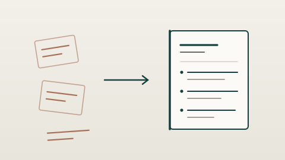

Viele Menschen mit zwanzig Jahren Berufserfahrung haben seit zwanzig Jahren keinen Lebenslauf mehr geschrieben. Das ist kein Versäumnis – es ist normal. Ich erstelle Ihre Unterlagen nach Schweizer Standard, auf Basis eines Gesprächs über Ihre Laufbahn.
Kostenlose Ersteinschätzung erhalten Kostenlos & unverbindlich · persönliche Antwort in 1–2 Werktagen · oder direkt anrufen: +41 79 514 82 76
Der Ansatz
Ein Lebenslauf wird selten dadurch besser, dass man ihn schöner formatiert. Er wird besser, wenn klar wird, wofür Sie fachlich stehen – und wenn die Stationen diese eine Aussage stützen.
Deshalb beginnt jedes Dossier mit einem Gespräch über Ihre Laufbahn, nicht mit einer Vorlage. Kritische Punkte wie eine Kündigung, eine Lücke oder zwanzig Jahre im selben Betrieb werden nicht kaschiert, sondern so eingeordnet, dass sie im Gespräch standhalten.

Ein Beispiel
Der Unterschied liegt nicht in der Wahrheit, sondern darin, ob ein Leser in fünf Sekunden erkennt, was Sie können.
„Zuständig für die Betreuung von Kunden sowie diverse administrative Aufgaben und Projektarbeit."
„Verantwortlich für 40 Schlüsselkunden in der Deutschschweiz. Aufbau eines strukturierten Betreuungsprozesses, der Rückfragen deutlich reduziert hat."
Ablauf
Wir gehen Ihre Stationen durch und arbeiten heraus, wofür Sie fachlich stehen und welche Zielrolle realistisch ist.
Sie erhalten Lebenslauf, Bewerbungsschreiben und Profiltext – aufeinander abgestimmt, sodass alle dieselbe Geschichte erzählen.
Sie lesen in Ruhe, melden zurück, was nicht passt. Eine Überarbeitungsrunde ist enthalten.
Ehrlich gesagt: Wenn ausbleibende Einladungen Ihr eigentliches Problem sind, liegt die Ursache oft nicht allein bei den Unterlagen, sondern bei der Positionierung und der Auswahl der Stellen. Dann ist der Bewerbungsprozess 40+ der ehrlichere Weg – das sage ich Ihnen in der Ersteinschätzung offen.
Schildern Sie kurz Ihre Situation. Sie erhalten eine ehrliche Einschätzung – auch dann, wenn ein anderer Schritt sinnvoller ist.
Kostenlose Ersteinschätzung erhalten
Kostenlos & unverbindlich · oder direkt anrufen: +41 79 514 82 76